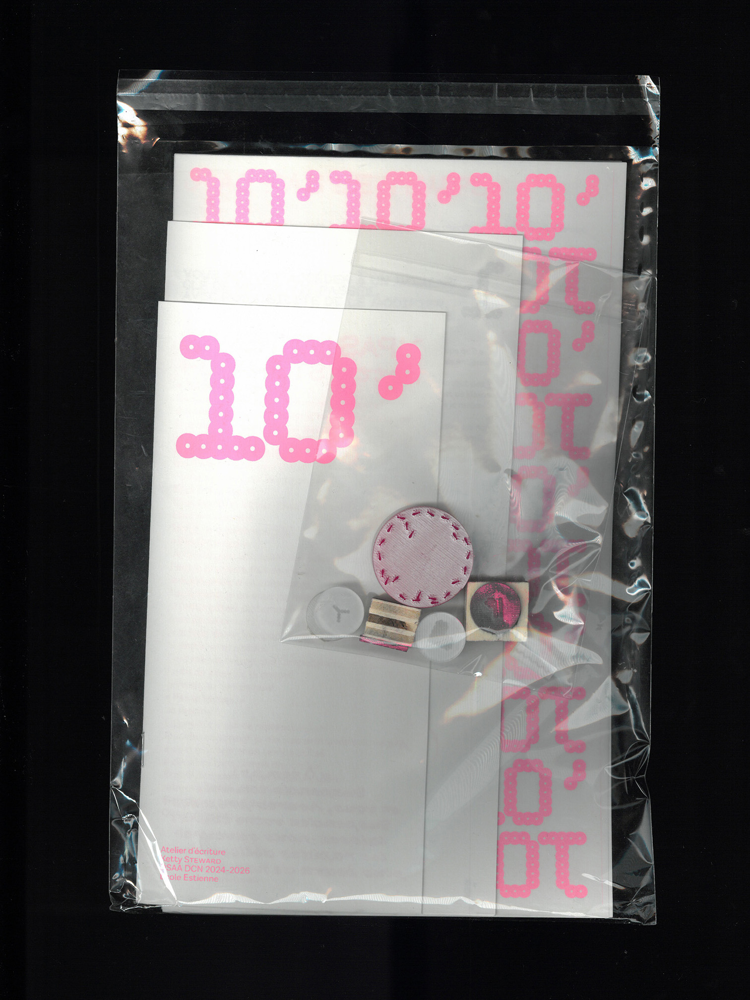

Dans le cadre d'un atelier d'écriture sur le thème du temps avec l'écrivaine Ketty Steward. Chaque membre de la classe à proposé un texte et une illustration pour concevoir un recueil collectif intitulé «10'». En collaboration avec Angèle Dumesny et Niel Armengaud, nous avons développé l'identité visuelle de l'édition.
